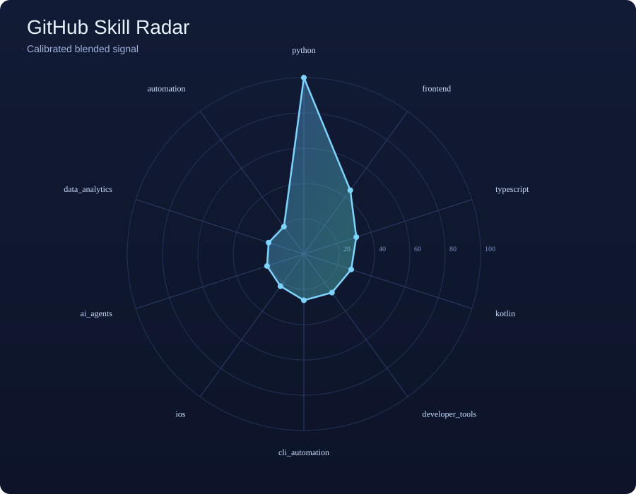

| # | Skill | Score | Signal | Band |
|---|---|---|---|---|
| 1 | Python | 100.0 | Band 5 · Strong | |
| 2 | Frontend | 44.4 | Band 2 · Early | |
| 3 | Typescript | 30.8 | Band 2 · Early | |
| 4 | Kotlin | 28.5 | Band 2 · Early | |
| 5 | Developer Tools | 27.1 | Band 2 · Early | |
| 6 | Cli Automation | 26.4 | Band 2 · Early | |
| 7 | Ai Agents | 22.2 | Band 1 · Seed | |
| 8 | Ios | 20.7 | Band 1 · Seed | |
| 9 | Data Analytics | 19.7 | Band 1 · Seed | |
| 10 | Ai Ml | 18.1 | Band 1 · Seed |

Score is inferred from GitHub metadata with private signals aggregated and smoothed before publishing.
| Step | Formula / Rule |
|---|---|
| Repo base weight | base(repo) = (log10(size + 20) + log10(stars + 3) + 0.25*log10(forks + 2) + 0.9) * exp(-age_days/1200) * fresh_bonus * fork_penalty |
| Language attribution | Distribute base weight by language-byte fraction from /languages |
| Topic + name signals | Add mapped weights from repo topics + keyword matches in name/description |
| Blend | raw(skill) = 0.7 * owner_score(skill) + 0.3 * all_score(skill) |
| Private-only smoothing | private_smooth(skill) = moving average on private-signal history before publishing |
| Normalization | normalized(skill) = 10 + 90 * (private_smooth(skill)/max_private_smooth)^0.62 |
| Coarse public band | band(skill) in {1..5} using thresholds: >=85:5, >=65:4, >=45:3, >=25:2, else 1 |
| Reviewer | Challenge | How this page answers it |
|---|---|---|
| Feynman | Can you explain each variable in plain language and tie it to observable data? | Yes. Every variable is linked to an observable GitHub field: size, stars, forks, push age, language bytes. |
| Fermi | Do magnitudes look sane and bounded? Does one outlier break everything? | Mostly sane. Log scaling and blending reduce domination, and normalized output is bounded to 10-100. |
| Randi | Where can this still fool us? | Private repos, non-GitHub work, and topic hygiene are blind spots. This is evidence-backed but not a full truth oracle. |